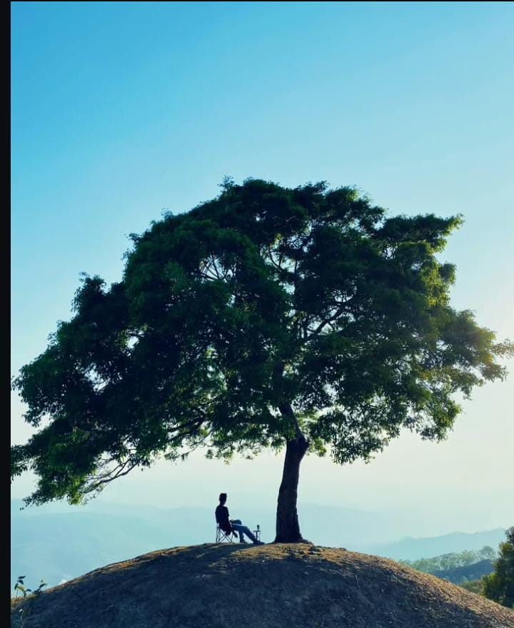
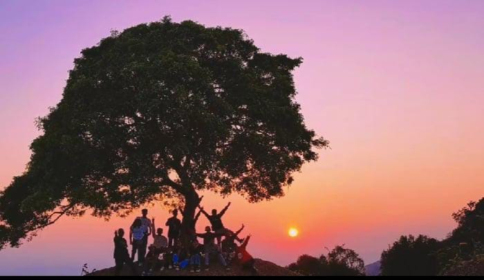
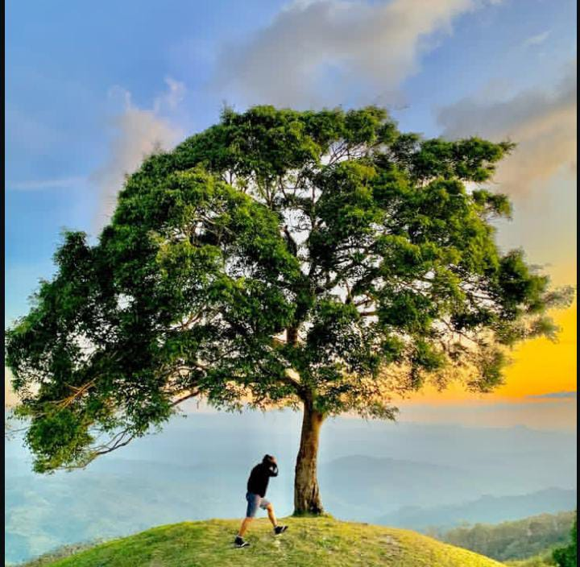

Deskripsi Lokasi
Sunset Pohon Jomblo Nelu berada di Bukit Tubmonas, Dusun Nelu, Desa Sunsea, Kecamatan Naibenu, TTU. Lokasi ini terkenal karena keberadaan satu pohon tunggal di sabana luas yang menjadi ikon kesendirian damai dan daya tarik utama untuk foto siluet saat senja.
Profil Pengunjung
- Kaum muda lokal: Pengunjung utama yang berburu foto estetik dan ketenangan alam.
- Wisatawan luar daerah: Termasuk dari NTB dan wilayah NTT lainnya.
- Lokasi dijaga oleh petugas TNI karena dekat wilayah perbatasan, sehingga tetap aman untuk dikunjungi.
🎫 Tarif Masuk
- Tiket Masuk: Gratis
- Parkir: Donasi sukarela kepada warga
- Pemandu lokal: Opsional, tergantung kebutuhan pengunjung
🕓 Jam Operasional
Tidak ada jam resmi, tetapi waktu terbaik untuk berkunjung adalah pukul 16.00 – 18.00 WITA untuk menikmati matahari terbenam.
✅ Tips Kunjungan
- Datang lebih awal untuk memilih spot terbaik sebelum matahari terbenam.
- Gunakan sepatu nyaman karena akses ke bukit melalui jalan berbatu dan sabana.
- Parkir di area desa dan lanjutkan dengan berjalan kaki ke atas bukit.
- Hindari kunjungan malam karena pencahayaan terbatas.
- Ikuti arahan TNI dan jaga kebersihan serta etika lokal.
Sumber: batastimor.com • liputan6.com